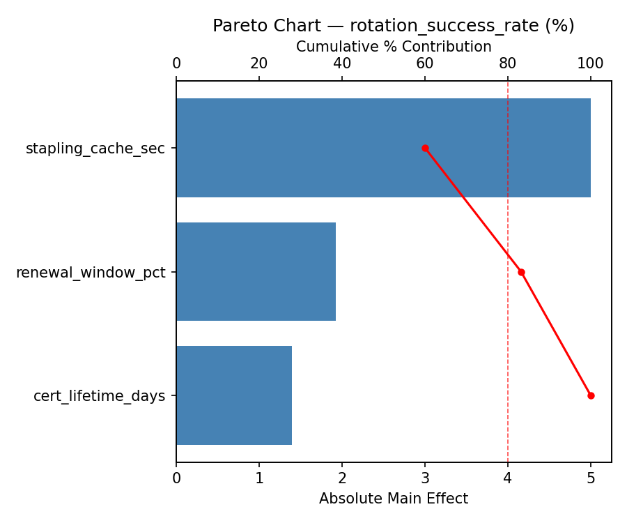
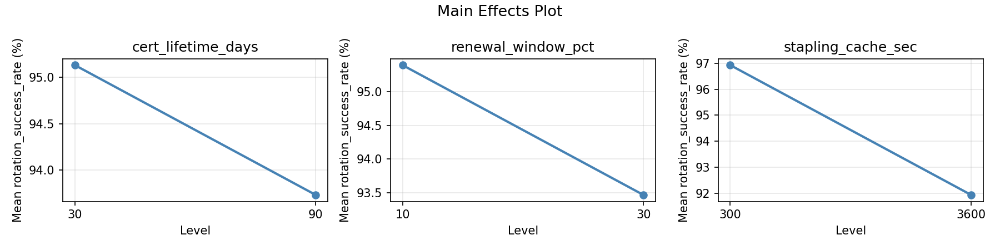
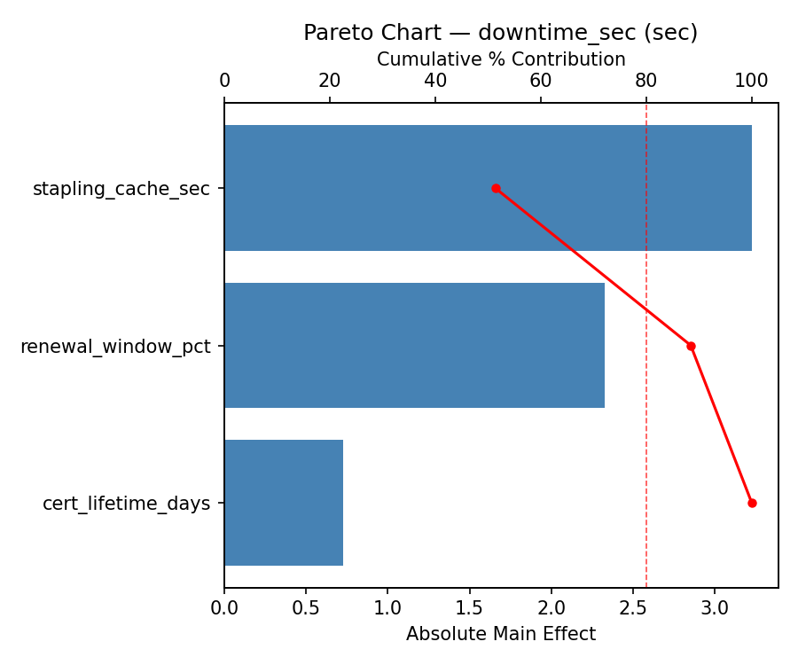
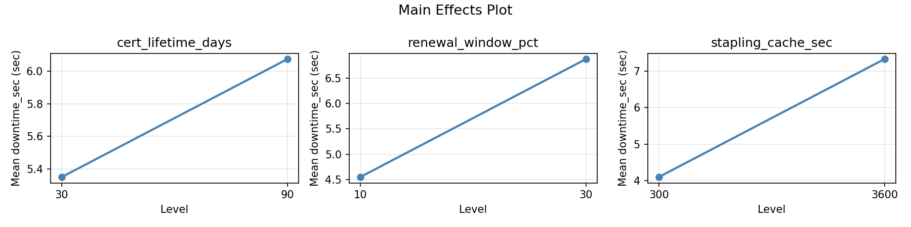
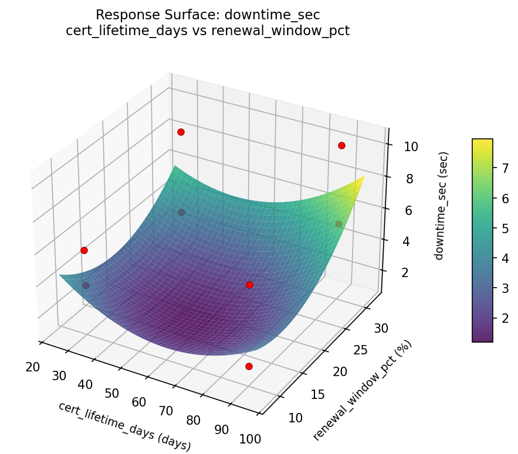
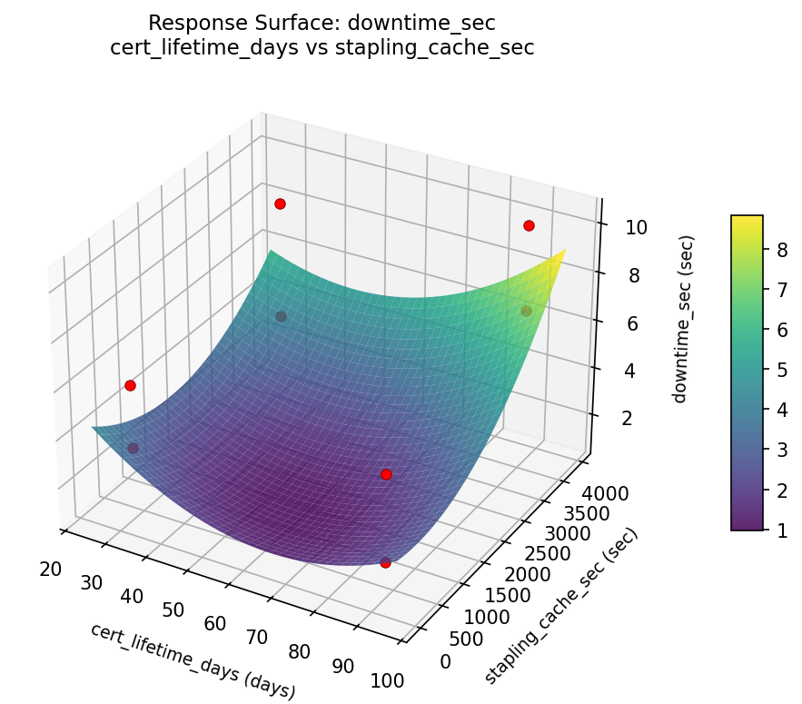
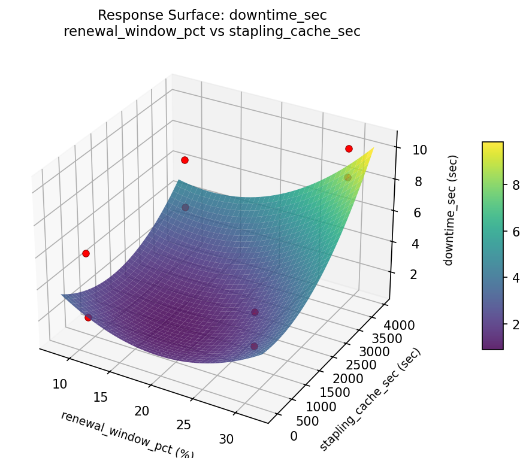
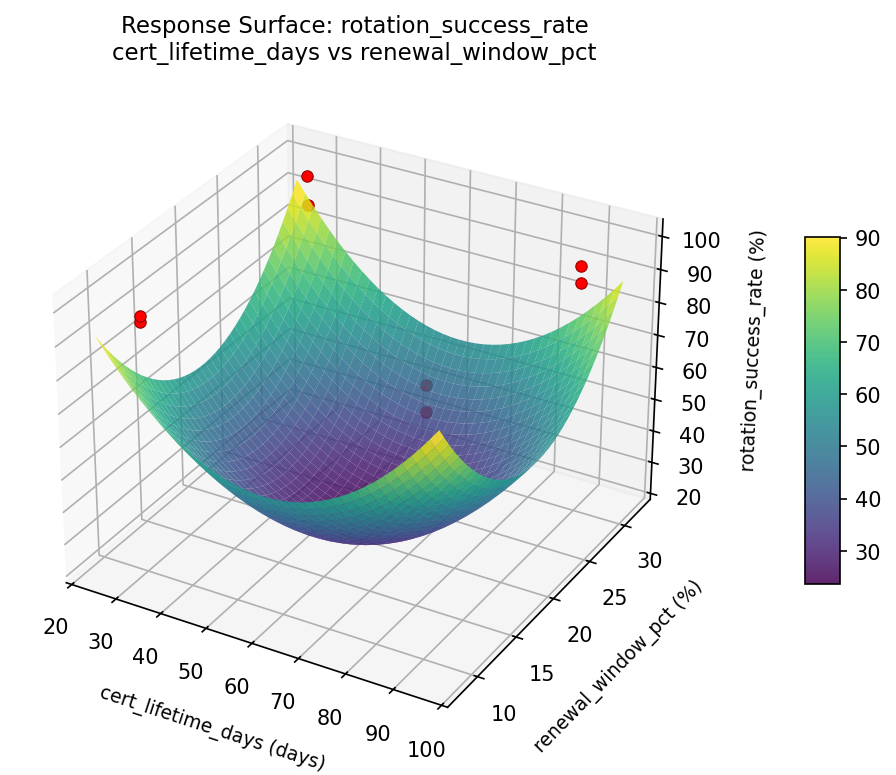
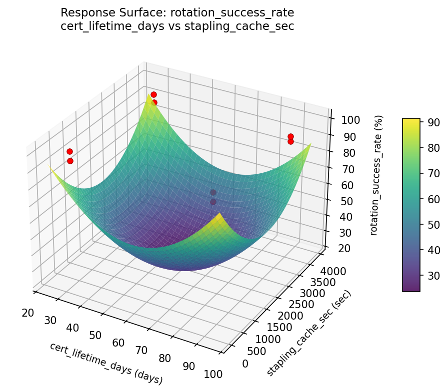
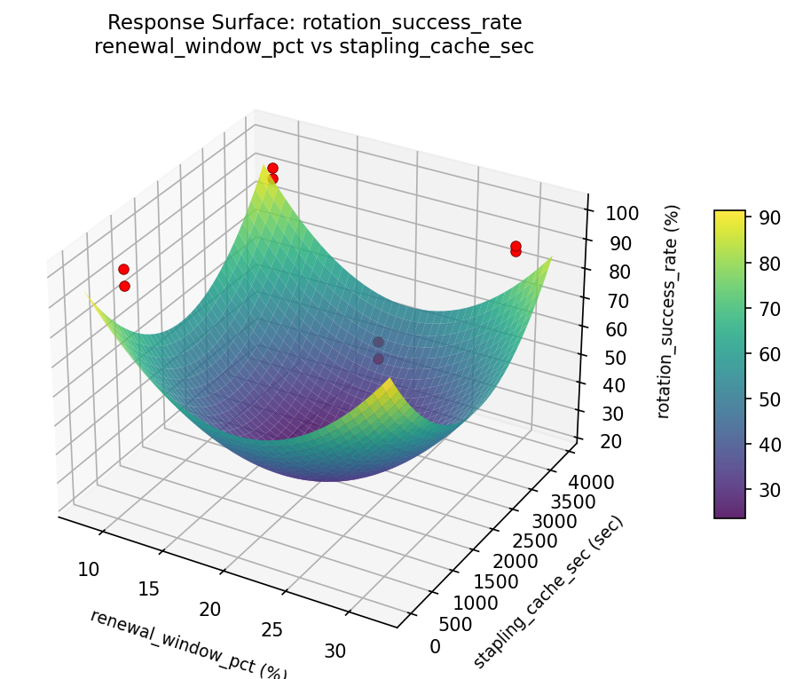

Summary
This experiment investigates certificate rotation strategy. Full factorial of cert lifetime, renewal window, and stapling cache for rotation success and downtime.
The design varies 3 factors: cert lifetime days (days), ranging from 30 to 90, renewal window pct (%), ranging from 10 to 30, and stapling cache sec (sec), ranging from 300 to 3600. The goal is to optimize 2 responses: rotation success rate (%) (maximize) and downtime sec (sec) (minimize). Fixed conditions held constant across all runs include ca = letsencrypt, key type = ecdsa_p256.
A full factorial design was used to explore all 8 possible combinations of the 3 factors at two levels. This guarantees that every main effect and interaction can be estimated independently, at the cost of a larger experiment (8 runs).
Key Findings
For rotation success rate, the most influential factors were renewal window pct (59.3%), stapling cache sec (24.2%), cert lifetime days (16.5%). The best observed value was 99.65 (at cert lifetime days = 30, renewal window pct = 10, stapling cache sec = 3600).
For downtime sec, the most influential factors were renewal window pct (44.3%), stapling cache sec (35.4%), cert lifetime days (20.3%). The best observed value was 1.8 (at cert lifetime days = 30, renewal window pct = 30, stapling cache sec = 3600).
Recommended Next Steps
- Consider whether any fixed factors should be varied in a future study.
Experimental Setup
Factors
| Factor | Low | High | Unit |
|---|
cert_lifetime_days | 30 | 90 | days |
renewal_window_pct | 10 | 30 | % |
stapling_cache_sec | 300 | 3600 | sec |
Fixed: ca = letsencrypt, key_type = ecdsa_p256
Responses
| Response | Direction | Unit |
|---|
rotation_success_rate | ↑ maximize | % |
downtime_sec | ↓ minimize | sec |
Configuration
{
"metadata": {
"name": "Certificate Rotation Strategy",
"description": "Full factorial of cert lifetime, renewal window, and stapling cache for rotation success and downtime"
},
"factors": [
{
"name": "cert_lifetime_days",
"levels": [
"30",
"90"
],
"type": "continuous",
"unit": "days"
},
{
"name": "renewal_window_pct",
"levels": [
"10",
"30"
],
"type": "continuous",
"unit": "%"
},
{
"name": "stapling_cache_sec",
"levels": [
"300",
"3600"
],
"type": "continuous",
"unit": "sec"
}
],
"fixed_factors": {
"ca": "letsencrypt",
"key_type": "ecdsa_p256"
},
"responses": [
{
"name": "rotation_success_rate",
"optimize": "maximize",
"unit": "%"
},
{
"name": "downtime_sec",
"optimize": "minimize",
"unit": "sec"
}
],
"settings": {
"operation": "full_factorial",
"test_script": "use_cases/62_certificate_rotation/sim.sh"
}
}
Experimental Matrix
The Full Factorial Design produces 8 runs. Each row is one experiment with specific factor settings.
| Run | cert_lifetime_days | renewal_window_pct | stapling_cache_sec |
|---|
| 1 | 30 | 30 | 3600 |
| 2 | 90 | 10 | 300 |
| 3 | 90 | 30 | 300 |
| 4 | 90 | 30 | 3600 |
| 5 | 30 | 30 | 300 |
| 6 | 90 | 10 | 3600 |
| 7 | 30 | 10 | 300 |
| 8 | 30 | 10 | 3600 |
Step-by-Step Workflow
1
Preview the design
$ python doe.py info --config use_cases/62_certificate_rotation/config.json
2
Generate the runner script
$ python doe.py generate --config use_cases/62_certificate_rotation/config.json \
--output use_cases/62_certificate_rotation/results/run.sh --seed 42
3
Execute the experiments
$ bash use_cases/62_certificate_rotation/results/run.sh
4
Analyze results
$ python doe.py analyze --config use_cases/62_certificate_rotation/config.json
5
Get optimization recommendations
$ python doe.py optimize --config use_cases/62_certificate_rotation/config.json
6
Generate the HTML report
$ python doe.py report --config use_cases/62_certificate_rotation/config.json \
--output use_cases/62_certificate_rotation/results/report.html
Features Exercised
| Feature | Value |
|---|
| Design type | full_factorial |
| Factor types | continuous (all 3) |
| Arg style | double-dash |
| Responses | 2 (rotation_success_rate ↑, downtime_sec ↓) |
| Total runs | 8 |
Analysis Results
Generated from actual experiment runs using the DOE Helper Tool.
Response: rotation_success_rate
Top factors: renewal_window_pct (59.3%), stapling_cache_sec (24.2%), cert_lifetime_days (16.5%).
Pareto Chart

Main Effects Plot

Response: downtime_sec
Top factors: renewal_window_pct (44.3%), stapling_cache_sec (35.4%), cert_lifetime_days (20.3%).
Pareto Chart

Main Effects Plot

Response Surface Plots
3D surfaces fitted with quadratic RSM. Red dots are observed data points.
downtime sec cert lifetime days vs renewal window pct

downtime sec cert lifetime days vs stapling cache sec

downtime sec renewal window pct vs stapling cache sec

rotation success rate cert lifetime days vs renewal window pct

rotation success rate cert lifetime days vs stapling cache sec

rotation success rate renewal window pct vs stapling cache sec

Full Analysis Output
=== Main Effects: rotation_success_rate ===
Factor Effect Std Error % Contribution
--------------------------------------------------------------
renewal_window_pct 4.9975 1.3670 59.3%
stapling_cache_sec -2.0425 1.3670 24.2%
cert_lifetime_days -1.3925 1.3670 16.5%
=== Interaction Effects: rotation_success_rate ===
Factor A Factor B Interaction % Contribution
------------------------------------------------------------------------
cert_lifetime_days stapling_cache_sec 3.2025 48.2%
renewal_window_pct stapling_cache_sec 1.9325 29.1%
cert_lifetime_days renewal_window_pct 1.5125 22.8%
=== Summary Statistics: rotation_success_rate ===
cert_lifetime_days:
Level N Mean Std Min Max
------------------------------------------------------------
30 4 95.1275 3.6397 90.9100 99.6400
90 4 93.7350 4.5104 88.9800 99.6500
renewal_window_pct:
Level N Mean Std Min Max
------------------------------------------------------------
10 4 91.9325 2.8977 88.9800 95.8600
30 4 96.9300 3.1364 94.1000 99.6500
stapling_cache_sec:
Level N Mean Std Min Max
------------------------------------------------------------
300 4 95.4525 3.2156 91.9800 99.6400
3600 4 93.4100 4.6651 88.9800 99.6500
=== Main Effects: downtime_sec ===
Factor Effect Std Error % Contribution
--------------------------------------------------------------
renewal_window_pct -3.2250 0.9938 44.3%
stapling_cache_sec 2.5750 0.9938 35.4%
cert_lifetime_days 1.4750 0.9938 20.3%
=== Interaction Effects: downtime_sec ===
Factor A Factor B Interaction % Contribution
------------------------------------------------------------------------
cert_lifetime_days stapling_cache_sec -1.8750 42.4%
renewal_window_pct stapling_cache_sec -1.5750 35.6%
cert_lifetime_days renewal_window_pct -0.9750 22.0%
=== Summary Statistics: downtime_sec ===
cert_lifetime_days:
Level N Mean Std Min Max
------------------------------------------------------------
30 4 4.9750 2.8860 1.8000 8.5000
90 4 6.4500 2.9422 3.3000 10.3000
renewal_window_pct:
Level N Mean Std Min Max
------------------------------------------------------------
10 4 7.3250 2.8076 3.7000 10.3000
30 4 4.1000 1.9026 1.8000 5.9000
stapling_cache_sec:
Level N Mean Std Min Max
------------------------------------------------------------
300 4 4.4250 2.1608 1.8000 6.8000
3600 4 7.0000 3.0572 3.3000 10.3000
Optimization Recommendations
=== Optimization: rotation_success_rate ===
Direction: maximize
Best observed run: #3
cert_lifetime_days = 30
renewal_window_pct = 10
stapling_cache_sec = 3600
Value: 99.65
RSM Model (linear, R² = 0.4531, Adj R² = 0.0429):
Coefficients:
intercept +94.4312
cert_lifetime_days -1.2188
renewal_window_pct -0.3163
stapling_cache_sec +2.0837
Predicted optimum (from linear model):
cert_lifetime_days = 30
renewal_window_pct = 10
stapling_cache_sec = 3600
Predicted value: 98.0500
Model quality: Weak fit — consider adding center points or using a different design.
Factor importance:
1. stapling_cache_sec (effect: 4.2, contribution: 57.6%)
2. cert_lifetime_days (effect: -2.4, contribution: 33.7%)
3. renewal_window_pct (effect: -0.6, contribution: 8.7%)
=== Optimization: downtime_sec ===
Direction: minimize
Best observed run: #4
cert_lifetime_days = 30
renewal_window_pct = 30
stapling_cache_sec = 3600
Value: 1.8
RSM Model (linear, R² = 0.3170, Adj R² = -0.1952):
Coefficients:
intercept +5.7125
cert_lifetime_days +0.5125
renewal_window_pct -0.0625
stapling_cache_sec -1.3875
Predicted optimum (from linear model):
cert_lifetime_days = 90
renewal_window_pct = 10
stapling_cache_sec = 300
Predicted value: 7.6750
Model quality: Weak fit — consider adding center points or using a different design.
Factor importance:
1. stapling_cache_sec (effect: -2.8, contribution: 70.7%)
2. cert_lifetime_days (effect: 1.0, contribution: 26.1%)
3. renewal_window_pct (effect: -0.1, contribution: 3.2%)